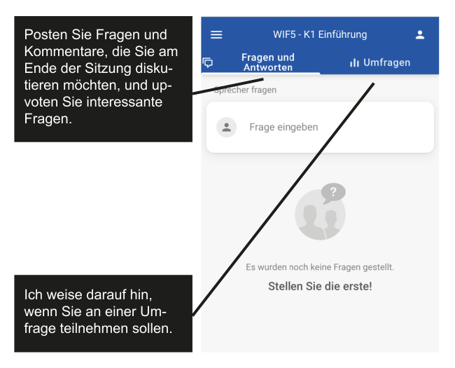

Semesterleistung
Grundzüge der Wirtschaftsinformatik (GWI)
Interaktion
Bitte sli.do starten
per Smartphone:
im Broswer (sli.do öffnen Code eingeben): 351297

Elevator Pitch
Sie erbringen eine Kurzpräsentation in Form eines Elevator Pitches1 zu einem aktuellen Thema der Wirtschaftsinformatik.
Setting
Stellen Sie sich vor, Sie arbeiten in einem größeren Unternehmen Ihrer Wahl und treffen Ihren CEO im Fahrstuhl. Sie nutzen die Gelegenheit, „Ihr Thema“ dem CEO zu präsentieren und ihn davon zu überzeugen, dass sein Unternehmen in Ihr Thema investieren sollte. Bis der Fahrstuhl in der Vorstandsetage angekommen ist, haben Sie nur 300 Sekunden Zeit. In dieser Zeit müssen Sie den CEO von der Relevanz des Themas überzeugen. Das machen Sie am besten, indem Sie kurz in Ihr Thema einführen und dann möglichst konkret zeigen, wie Ihr Thema dazu beitragen könnte, dass das Unternehmen erfolreicher wird.
Rahmenbedingungen
- Länge mindestens 4 Minuten, maximal 5 Minuten
- Überzeugende Vorstellung des Themas
- allgemeinverständliche Einführung in das Thema
(“was ist es und weshalb ist es wichtig?”) - Vorschlag eines Anwendungsfalls zur Thematik
(wie können wir damit erfolgreich sein?)
- allgemeinverständliche Einführung in das Thema
- Eine Folie zur Illustration (Ausruck im Fahrstuhl, Einreichung vorab)
- Die Termine entnehmen Sie dem Zeitplan
Mit Ablegen der Präsentationsprüfung versichern Sie, dass Sie die eingereichte Prüfungsleistung ohne fremde Hilfe verfasst haben. Bereits der Versuch, das Ergebnis der Arbeit durch Täuschung (z.B. durch Mithilfe Dritter, auch Kommilitonen) zu beeinflussen kann zum Nicht-Bestehen der Leistung führen.
Themenwahl
Sie suchen sich ein Thema aus einer Liste an möglichen Themen aus (siehe Moodle)
- Jedes Thema kann maximal zweimal vergeben werden
- Die Vergabe erfolgt nach dem Prinzip „First come, first serve“
- Die Wahl ist fix, kann nicht geändert werden
Themenliste
- Themen
- 5G
- Augmented reality
- CDN (content distribution network)
- Conversational interfaces
- Crowdsourcing
- Cyber physical system
- Data lake
- Deep-learning
- Desktop virtualization
- Digital twin
- Distributed ledger
- Edge computing
- Green computing
- In-memory databases
- Intrusion detection systems
- LiDAR
- LoRaWan
- Low code platforms
- NFC (near field communications)
- Platform as a Service (PaaS)
- Process mining
- Red teaming
- Robotic process automation (RPA)
- Scaled agile framework (SAFe)
- Serverless computing
- Smart contracts
- Social commerce
- Social engineering penetration tests
- Virtual reality
- Workplace as a service
Präsentation
Den Termin zur Präsentationsprüfung entnehmen Sie dem Zeitplan.
- Während der Präsentationsprüfung sprechen Sie frei
- Sie haben nur eine Folie zur Illustration. Bringen Sie diese ausgedruckt mit
- Andere Hilfsmittel wie bspw. Notizen sind nicht erlaub
- Die Zeit ist fix, die Präsentation dauert min 4, maximal 5 Minuten.
Verschwenden Sie keine Zeit. Üben sie vorher.
Q&A
Posten Sie Ihre Fragen auf slid.do
Literatur
Fussnoten
Der Begriff Elevator Pitch bezeichnet eine Methode, mit der eine Idee innerhalb kürzester Zeit überzeugend präsentieret wird. Es geht darum einer Person im Aufzug (auf Englisch: elevator) während der gemeinsamen Fahrt für die Idee zu gewinnen. Angesichts der Kürze der Zeit ist es wichtig, relevante Informationen so komprimiert und überzeugend zu vermitteln, dass das Gegenüber begeistert wird. (Denning und Dew 2012)↩︎